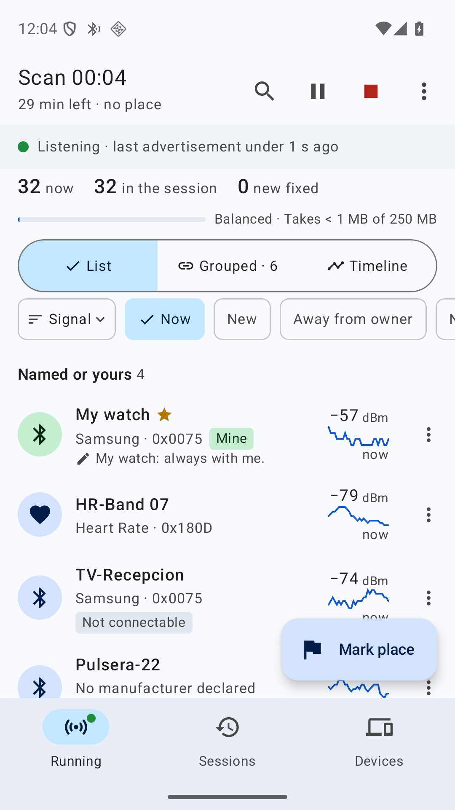
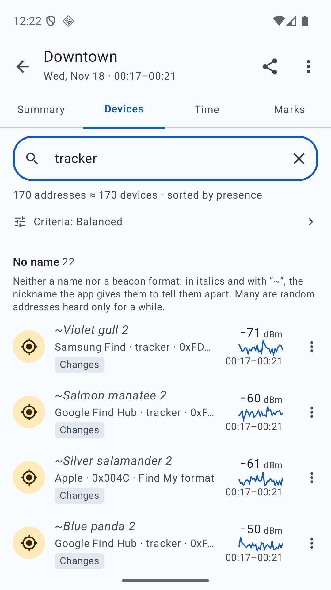
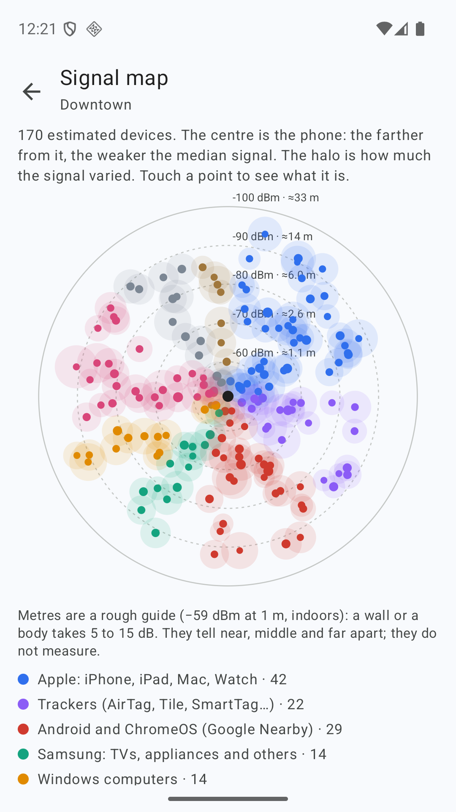
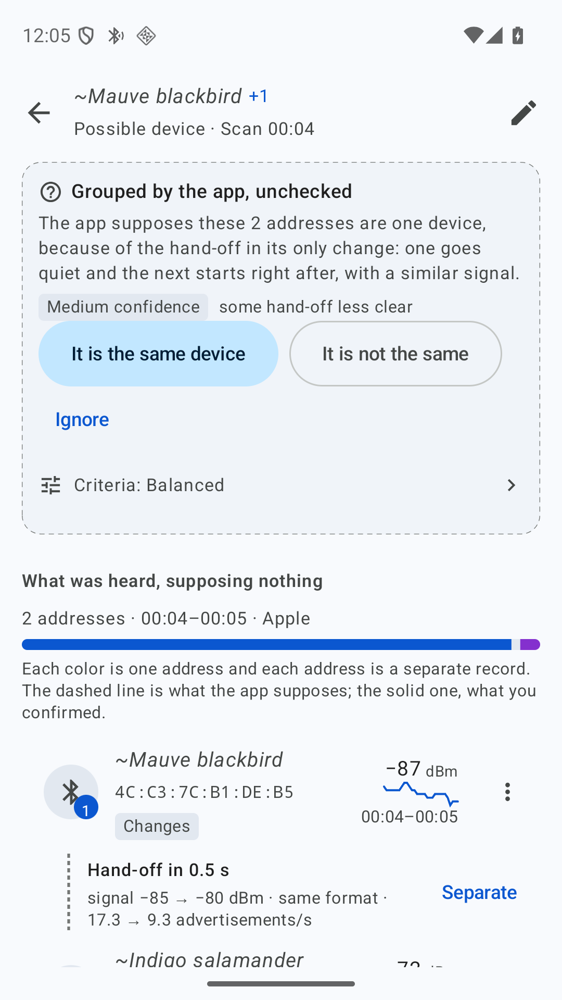

BLE Observer
Record the Bluetooth LE around you for minutes or hours. See what is there, which addresses are probably the same device, and take it all to Excel, CSV or JSON. It only listens.
Get it on Google Play



Sessions, not snapshots
Every advertisement with its time and signal, marks for each place, and pauses recorded with their cause.
Exports you can use
Excel with a sheet that explains every column, CSV per table, JSON with each advertisement's raw bytes. What you read from a device goes with it.
Addresses grouped into devices
Phones and earbuds rotate their address every few minutes. The app proposes which ones are the same device and says why. Only within one session.
Tracker tags
Find My, Tile, Samsung SmartTag, Google Find Hub and Samsung Find stand out in yellow; search "tracker" to list them.
Radial signal map
Everything around you at a glance: near or far by median signal, grouped by kind. Also live while you record.
Only listens
Never writes, subscribes or pairs. Connects only to read a device's services when you ask. No account, no ads.
Read more
What a phone hears: five hours of Bluetooth LE: how long Apple and Android addresses last, and how tracker tags rotate.
Observador BLE
Graba el Bluetooth LE de tu alrededor durante minutos u horas. Mira qué hay, qué direcciones son probablemente el mismo aparato, y llévatelo todo a Excel, CSV o JSON. Solo escucha.
Disponible en Google PlaySesiones, no fotos sueltas
Cada anuncio con su hora y su señal, marcas para cada lugar, y las pausas anotadas con su causa.
Exportaciones que sirven
Excel con una hoja que explica cada columna, CSV por tabla y JSON con los bytes de cada anuncio. Lo que lees de un aparato va con él.
Direcciones agrupadas en aparatos
Móviles y auriculares cambian de dirección cada pocos minutos. La app propone cuáles son el mismo aparato y dice por qué. Solo dentro de una sesión.
Localizadores
Find My, Tile, Samsung SmartTag, Google Find Hub y Samsung Find salen en amarillo; busca «localizador» para verlos todos.
Mapa radial de señal
Todo lo de alrededor de un vistazo: cerca o lejos según la señal mediana, agrupado por tipo. También en directo mientras grabas.
Solo escucha
Nunca escribe, ni se suscribe, ni empareja. Solo se conecta para leer los servicios de un aparato cuando se lo pides. Sin cuenta y sin anuncios.
Para saber más
Lo que oye un móvil: cinco horas de Bluetooth LE: cuánto duran las direcciones de Apple y Android, y cómo rotan los localizadores.